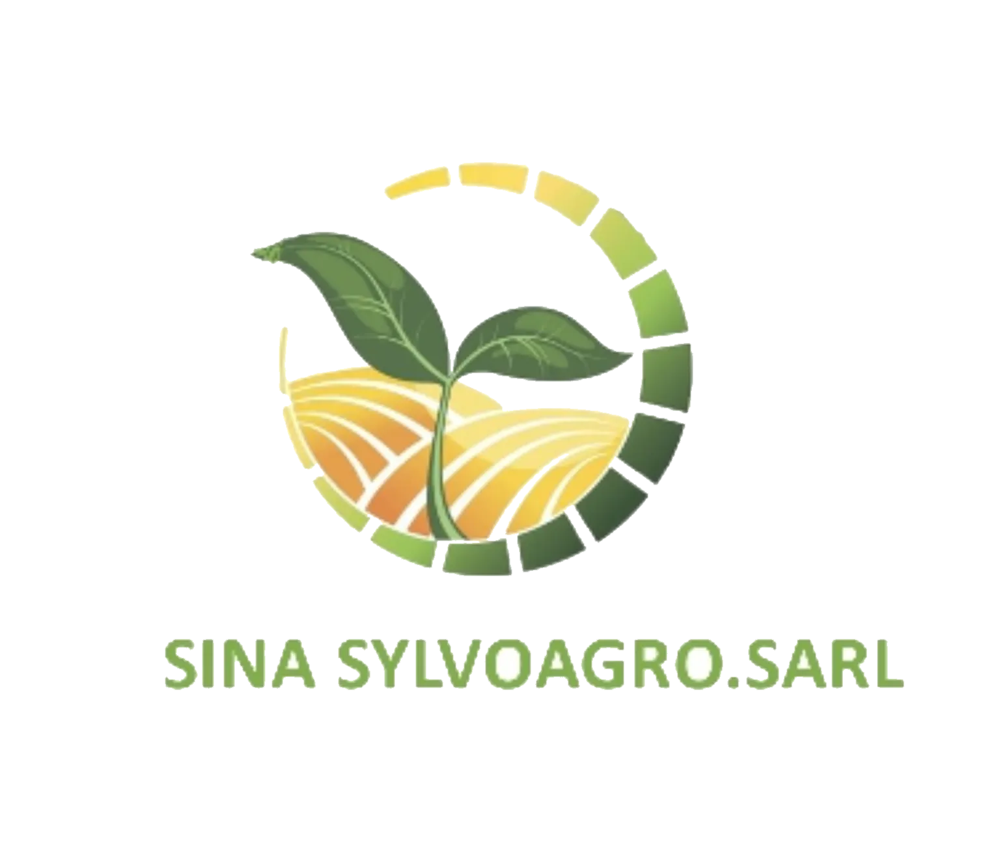

Durabilité
Encourager des pratiques et des solutions favorables à une agriculture durable.

SINA SYLVOAGRO.SARL Agir aujourd'hui pour une agriculture durableQUI SOMMES-NOUS ?
Découvrez SINA SYLVOAGRO.SARL, une entreprise engagée dans le développement de solutions pour une agriculture durable et productive au Burkina Faso.
Bienvenue chez SINA SYLVOAGRO.SARL.
Nous développons des solutions agricoles destinées à accompagner les producteurs et à contribuer au développement d'une agriculture durable et productive.
Notre objectif est de proposer des solutions adaptées aux besoins du monde agricole et de rester à l'écoute des producteurs.
Découvrir nos produitsNous souhaitons contribuer à une agriculture plus durable et productive en mettant à disposition des producteurs des solutions agricoles et un accompagnement adapté à leurs besoins.
Les principes qui guident notre engagement.
Encourager des pratiques et des solutions favorables à une agriculture durable.
Être à l'écoute des producteurs et répondre à leurs demandes.
Contribuer au développement d'une agriculture productive.
Contactez SINA SYLVOAGRO.SARL pour en savoir plus.